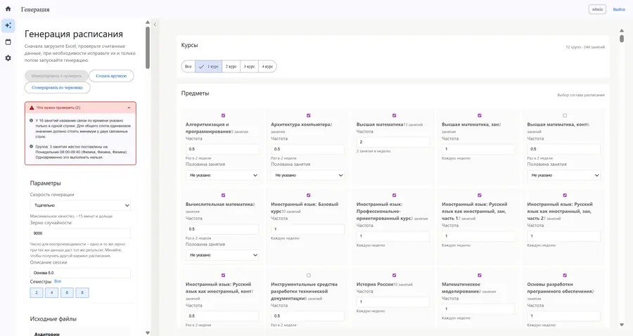
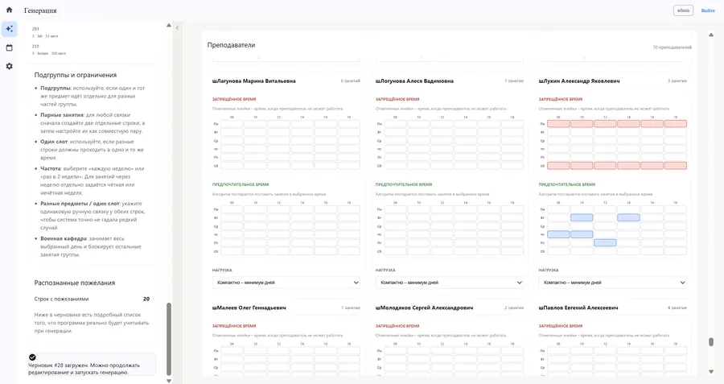
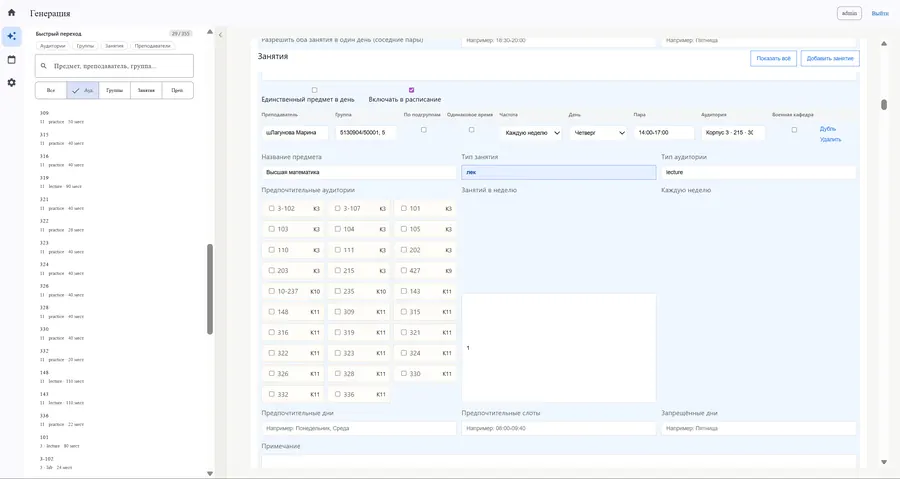
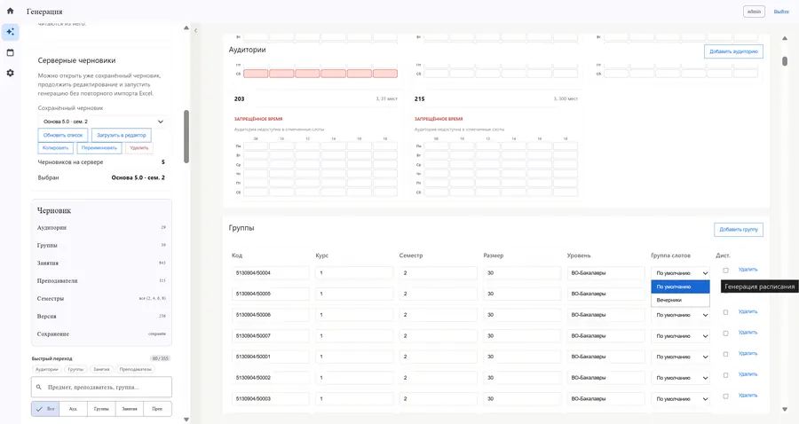
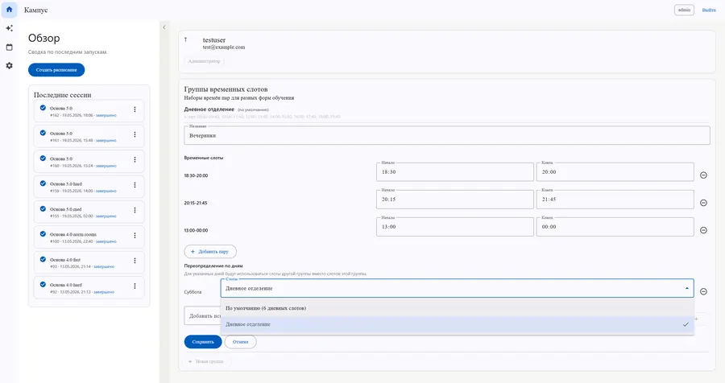
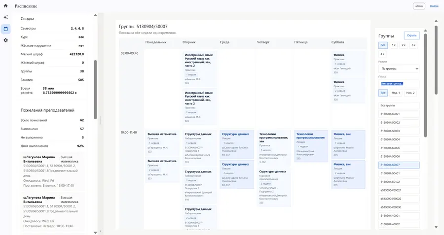
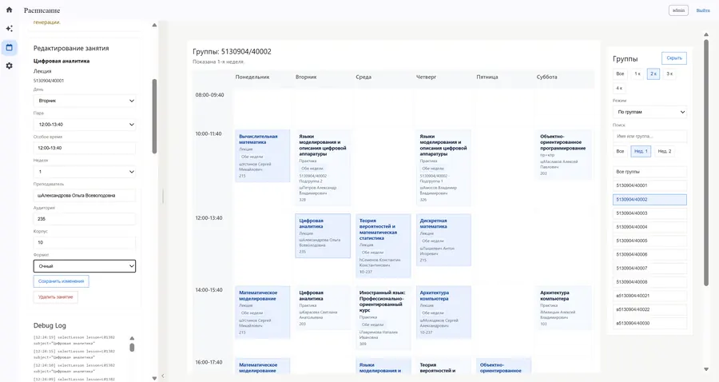

Проблема
Расписание до сих пор собирают руками
Методист раскладывает сотни занятий по неделе, удерживая в голове занятость преподавателей, групп и аудиторий. Пожелания преподавателей противоречат друг другу, а вручную пересчитать, сколько из них выполнено, слишком долго. Подготовка занимает много времени, а качество результата никто не оценивает: расписание принимают как данность.
Почему не подошли готовые продукты
FET
Не поддерживает чётные и нечётные недели, без которых российский учебный цикл не описать.
UniTime
Рассчитана на американскую модель с индивидуальной записью студента на курсы. Обучение фиксированными группами в неё не укладывается.
1С:Расписание
Закрытая логика расчёта и тяжёлое внедрение. Настроить правила под отдельный факультет невозможно.
Галактика РУЗ
То же ограничение в большем масштабе: правила задаются централизованно, отдельная кафедра их не меняет.
Как устроено решение
Система считает три стратегии параллельно и оставляет лучшую
Пользователь описывает ограничения и пожелания и выбирает режим расчёта: быстрый, стандартный или тщательный. Режим задаёт только глубину поиска - стратегии и веса менять не нужно. Система строит три варианта расписания разными стратегиями и выбирает из них итоговый.
Нагрузка, аудитории, пожелания преподавателей: Excel или ручной ввод
Система выявляет противоречия в условиях до запуска расчёта
- Оптимизирующая - минимизирует окна и разгружает дни
- По пожеланиям - приоритет требованиям преподавателей
- Смешанная - случайный порядок перебора, неочевидные сочетания
Отбрасываются варианты с нарушениями, из оставшихся берётся тот, где выполнено больше пожеланий
Отчёт по пожеланиям и фильтры по группе, преподавателю и аудитории
Стек: FastAPI · Angular · PostgreSQL · Redis · Keycloak · Docker
Как это выглядит в работе
От исходных данных до готового расписания
Нажмите на любой экран, чтобы рассмотреть детали.







Из чего собрана система
API кладёт задание в очередь и сразу отвечает пользователю. Свободный обработчик забирает задание, считает расписание в отдельном процессе и сохраняет результат в базу. Поэтому интерфейс не блокируется: методист следит за прогрессом и ставит в очередь несколько вариантов подряд.
Исследование пользователей
Требования собирал у трёх групп: составителей, преподавателей и студентов
составителя расписания
Интервью с теми, кто собирает расписание вручную. Из их ответов сложились требования к интерфейсу: какие поля нужны в черновике и что методист должен править сам.
студентов в опросе
Опрос дал три главные претензии к расписанию: окна между парами, ранние и поздние занятия.
пожелания преподавателей за год
Преподаватели пишут их в свободной форме, единого шаблона нет. Разобрал накопленный массив, выделил повторяющиеся типы просьб и на них построил интерфейс: сетка дней и пар вместо текста. Отдельно поговорил с преподавателем, который пожеланий не подаёт никогда, - чтобы понять ожидания тех, кто молчит.
Приоритизация и объём
Требования разложил по MoSCoW: обязательное к защите, желательное и то, что сознательно оставил за рамками. Ограничения разделил на жёсткие и мягкие - на этом делении держится и модель данных, и оценка качества расписания.
Роли и доступ
Роли повторяют распределение обязанностей на факультете: наблюдатель просматривает расписание, редактор готовит черновики и запускает расчёт, администратор управляет доступом и видит все черновики.
Как ответы студентов попали в расчёт
Эти три претензии получили вес в оценке расписания: вариант с окнами проигрывает такому же без окон, а пара в 08:00 назначается только тогда, когда занятие больше некуда поставить.
Результат
Сравнение с действующим расписанием факультета
Сравнивал не с моделью, а с расписанием, по которому факультет учился в этом семестре. Быстрый режим считал без дополнительных требований, тщательный - с полным набором ограничений и пожеланий преподавателей.
Конфликты не возникают по конструкции
Занятость преподавателя, группы и аудитории, фиксированные пары и запрещённое время работают не как штраф, которого алгоритм избегает, а как фильтр: недопустимые варианты не попадают в перебор. В обоих режимах итоговое расписание не нарушило ни одного жёсткого ограничения, а всё невыполненное система выписывает списком с причиной.
Статус
Система развёрнута в инфраструктуре СПбПУ. По результатам работы вышли три публикации РИНЦ. Проект победил на конференции «Современные технологии в теории и практике программирования».
Управление объёмом
Часть объёма передал другому исполнителю
Импорт действующего расписания из университетской РУЗ и обмен файлами Excel вынес в отдельную дипломную работу другого студента, которого консультировал по ходу. Формат обмена согласовали на старте, поэтому сроки основного проекта не сдвинулись.